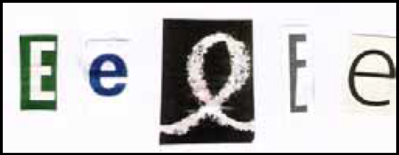

Ao reconhecer o conjunto de sinais acima como várias
realizações de uma mesma letra, um usuário da língua
revela estratégias psicolinguísticas capazes de
-
mostrar seu conhecimento linguístico inato a respeito
da escrita alfabética.
-
interpretar um sinal linguístico como componente de
sinais mais complexos.
-
identificar diferenças da oralidade que não são
registradas no sistema alfabético da escrita.
-
reconhecer a identidade de um sinal linguístico, apesar
dos diferentes formatos das letras.
-
sistematizar combinações de diferentes sinais que
formam signos linguísticos.